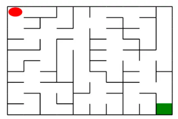
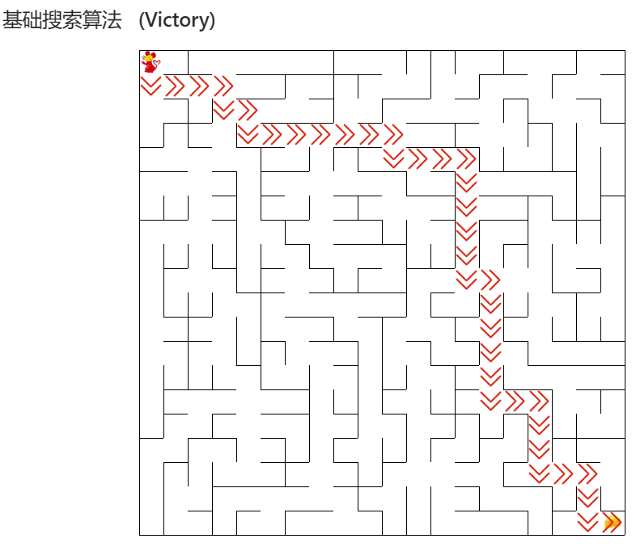
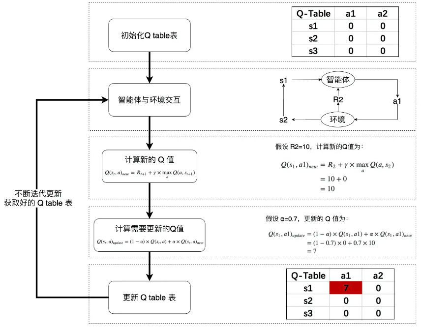
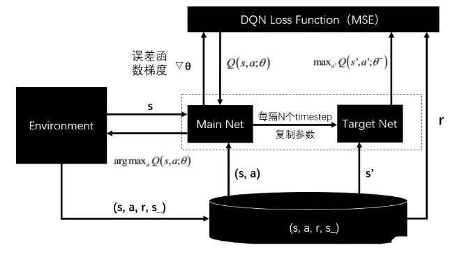

机器人自动走迷宫 实验介绍
实验内容
在本实验中，要求分别使用基础搜索算法和 Deep QLearning 算法，完成机器人自动走迷宫。

如上图所示，左上角的红色椭圆既是起点也是机器人的初始位置，右下角的绿色方块是出口。
游戏规则为：从起点开始，通过错综复杂的迷宫，到达目标点(出口)。
在任一位置可执行动作包括：向上走 'u'、向右走 'r'、向下走 'd'、向左走 'l'。
执行不同的动作后，根据不同的情况会获得不同的奖励，具体而言，有以下几种情况。
撞墙
走到出口
其余情况
需要分别实现基于基础搜索算法 和 Deep QLearning 算法 的机器人，使机器人自动走到迷宫的出口。
实验要求
使用 Python 语言。
使用基础搜索算法完成机器人走迷宫。
使用 Deep QLearning 算法完成机器人走迷宫。
算法部分需要自己实现，不能使用现成的包、工具或者接口。
实验环境
可以使用 Python 实现基础算法的实现， 使用 Keras、PyTorch等框架实现 Deep QLearning 算法。
参考资料
实验内容
Maze类介绍
创建迷宫
通过迷宫类 Maze 可以随机创建一个迷宫。
使用 Maze(maze_size=size) 来随机生成一个 size * size 大小的迷宫。
使用 print() 函数可以输出迷宫的 size 以及画出迷宫图
红色的圆是机器人初始位置
绿色的方块是迷宫的出口位置
重要的成员方法
在迷宫中已经初始化一个机器人，需要编写的算法实现在给定条件下控制机器人移动至目标点。
Maze 类中重要的成员方法如下：
sense_robot() ：获取机器人在迷宫中目前的位置。
return：机器人在迷宫中目前的位置。
move_robot(direction) ：根据输入方向移动默认机器人，若方向不合法则返回错误信息。
direction：移动方向, 如:"u", 合法值为： ['u', 'r', 'd', 'l']
return：执行动作的奖励值
can_move_actions(position)：获取当前机器人可以移动的方向
position：迷宫中任一处的坐标点
return：该点可执行的动作，如：['u','r','d']
is_hit_wall(self, location, direction)：判断该移动方向是否撞墙
location, direction：当前位置和要移动的方向，如(0,0) , "u"
return：True(撞墙) / False(不撞墙)
draw_maze()：画出当前的迷宫
以下代码随机移动机器人，并记录下获得的奖励，展示出机器人最后的位置。
import random
rewards = [] # 记录每走一步的奖励值
actions = [] # 记录每走一步的移动方向
# 循环、随机移动机器人10次，记录下奖励
for i in range ( 10 ):
valid_actions = maze . can_move_actions ( maze . sense_robot ())
action = random . choice ( valid_actions )
rewards . append ( maze . move_robot ( action ))
actions . append ( action )
print ( "the history of rewards:" , rewards )
print ( "the actions" , actions )
# 输出机器人最后的位置
print ( "the end position of robot:" , maze . sense_robot ())
# 打印迷宫，观察机器人位置
print ( maze )
输出结果为：
the history of rewards:
[-0.1, -0.1, -0.1, -0.1, -0.1, -0.1, -0.1, -0.1, -0.1, -0.1]
the actions：
['r', 'l', 'd', 'd', 'u', 'd', 'r', 'd', 'r', 'l']
the end position of robot: (3, 1)
基本搜索算法：广度优先搜索算法
对于迷宫游戏，常见的三种的搜索算法有广度优先搜索、深度优先搜索和最佳优先搜索（A*)。
在下面的代码示例中，将实现广度优先搜索算法；主要通过建立一颗搜索树并进行层次遍历实现。
每个节点表示为以 Class SearchTree 实例化的对象，类属性有：当前节点位置、到达当前节点的动作、当前节点的父节点、当前节点的子节点；
valid_actions(): 用以获取机器人可以行走的位置（即不能穿墙）；expand(): 对于未拓展的子节点进行拓展；backpropagation(): 回溯搜索路径。
算法具体步骤 首先以机器人起始位置建立根节点，并入队；接下来不断重复以下步骤直到判定条件:
将队首节点的位置标记已访问；判断队首是否为目标位置(出口)， 是则终止循环并记录回溯路径
判断队首节点是否为叶子节点，是则拓展该叶子节点
如果队首节点有子节点，则将每个子节点插到队尾
将队首节点出队
代码及运行结果
import numpy as np
# 机器人移动方向
move_map = {
'u' : ( - 1 , 0 ), # up
'r' : ( 0 , + 1 ), # right
'd' : ( + 1 , 0 ), # down
'l' : ( 0 , - 1 ), # left
}
# 迷宫路径搜索树
class SearchTree ( object ):
def __init__ ( self , loc = (), action = '' , parent = None ):
"""
初始化搜索树节点对象
:param loc: 新节点的机器人所处位置
:param action: 新节点的对应的移动方向
:param parent: 新节点的父辈节点
"""
self . loc = loc # 当前节点位置
self . to_this_action = action # 到达当前节点的动作
self . parent = parent # 当前节点的父节点
self . children = [] # 当前节点的子节点
def add_child ( self , child ):
"""
添加子节点
:param child:待添加的子节点
"""
self . children . append ( child )
def is_leaf ( self ):
"""
判断当前节点是否是叶子节点
"""
return len ( self . children ) == 0
def expand ( maze , is_visit_m , node ):
"""
拓展叶子节点，即为当前的叶子节点添加执行合法动作后到达的子节点
:param maze: 迷宫对象
:param is_visit_m: 记录迷宫每个位置是否访问的矩阵
:param node: 待拓展的叶子节点
"""
can_move = maze . can_move_actions ( node . loc )
for a in can_move :
new_loc = tuple ( node . loc [ i ] + move_map [ a ][ i ] for i in range ( 2 ))
if not is_visit_m [ new_loc ]:
child = SearchTree ( loc = new_loc , action = a , parent = node )
node . add_child ( child )
def back_propagation ( node ):
"""
回溯并记录节点路径
:param node: 待回溯节点
:return: 回溯路径
"""
path = []
while node . parent is not None :
path . insert ( 0 , node . to_this_action )
node = node . parent
return path
def breadth_first_search ( maze ):
"""
对迷宫进行广度优先搜索
:param maze: 待搜索的maze对象
"""
start = maze . sense_robot ()
root = SearchTree ( loc = start )
queue = [ root ] # 节点队列，用于层次遍历
h , w , _ = maze . maze_data . shape
is_visit_m = np . zeros (( h , w ), dtype = np . int ) # 标记迷宫的各个位置是否被访问过
path = [] # 记录路径
while True :
current_node = queue [ 0 ]
is_visit_m [ current_node . loc ] = 1 # 标记当前节点位置已访问
if current_node . loc == maze . destination : # 到达目标点
path = back_propagation ( current_node )
break
if current_node . is_leaf ():
expand ( maze , is_visit_m , current_node )
# 入队
for child in current_node . children :
queue . append ( child )
# 出队
queue . pop ( 0 )
return path
算法测试结果：对于下图所示的迷宫，给出的搜索路径为：
['d', 'd', 'd', 'd', 'r', 'r', 'r', 'r', 'r', 'r', 'd', 'd', 'd', 'd', 'd', 'r', 'r', 'r']
成功到达目标点
基础搜索算法：深度优先搜索算法
深度优先搜索（Depth-First Search，DFS）是一种图遍历算法，也是一种用于解决问题的基本算法。它从起始节点开始，沿着一条路径一直深入直到无法再深入为止，然后回溯到上一个节点，尝试探索其他路径，直到找到目标节点或者遍历完整个图。
深度优先搜索可以通过递归或使用栈（Stack）来实现。下面是深度优先搜索的一般步骤：
选择起始节点： 选择图中的一个节点作为起始节点。
标记节点： 标记起始节点为已访问。
探索相邻节点： 对于起始节点的每个相邻节点，如果相邻节点未被访问，就对该相邻节点进行深度优先搜索。
递归或使用栈： 在进行深度优先搜索时，可以使用递归来实现，也可以使用栈来维护节点的顺序。递归是一种天然的深度优先方式，而使用栈则是为了避免递归带来的潜在问题。
回溯： 如果在探索过程中找到目标节点或者无法继续深入，就回溯到上一个节点，然后继续尝试其他路径。
重复步骤： 重复以上步骤，直到遍历完整个图或者找到目标节点。
算法流程
在本次实验中，我们采用栈的方式实现DFS，具体实现步骤如下：
首先以机器人起始位置建立根节点，并入栈；接下来不断重复以下步骤直到判定条件:
将栈首节点的位置标记已访问；判断栈首是否为目标位置(出口)， 是 则终止循环并记录回溯路径
判断栈首节点是否为叶子节点，是则拓展该叶子节点
如果栈首节点有子节点，则将每个子节点入栈
将队首节点出栈
代码及运行结果
import numpy as np
class SearchTree ( object ):
def __init__ ( self , loc = (), action = '' , parent = None ):
"""
初始化搜索树节点对象
:param loc: 新节点的机器人所处位置
:param action: 新节点的对应的移动方向
:param parent: 新节点的父辈节点
"""
self . loc = loc # 当前节点位置
self . to_this_action = action # 到达当前节点的动作
self . parent = parent # 当前节点的父节点
self . children = [] # 当前节点的子节点
def add_child ( self , child ):
"""
添加子节点
:param child:待添加的子节点
"""
self . children . append ( child )
def is_leaf ( self ):
"""
判断当前节点是否是叶子节点
"""
return len ( self . children ) == 0
def expand ( maze , is_visit_m , node ):
"""
拓展叶子节点，即为当前的叶子节点添加执行合法动作后到达的子节点
:param maze: 迷宫对象
:param is_visit_m: 记录迷宫每个位置是否访问的矩阵
:param node: 待拓展的叶子节点
"""
move_map = {
'u' : ( - 1 , 0 ), # up
'r' : ( 0 , + 1 ), # right
'd' : ( + 1 , 0 ), # down
'l' : ( 0 , - 1 ), # left
}
can_move = maze . can_move_actions ( node . loc )
for a in can_move :
new_loc = tuple ( node . loc [ i ] + move_map [ a ][ i ] for i in range ( 2 ))
if not is_visit_m [ new_loc ]:
child = SearchTree ( loc = new_loc , action = a , parent = node )
node . add_child ( child )
def back_propagation ( node ):
"""
回溯并记录节点路径
:param node: 待回溯节点
:return: 回溯路径
"""
path = []
while node . parent is not None :
path . insert ( 0 , node . to_this_action )
node = node . parent
return path
def my_search ( maze ):
start = maze . sense_robot ()
root = SearchTree ( loc = start )
stack = [ root ]
h , w , _ = maze . maze_data . shape
# 标记迷宫的各个位置是否被访问过
is_visit_m = np . zeros (( h , w ), dtype = np . int32 )
path = [] # 记录路径
while True :
current_node = stack [ - 1 ]
is_visit_m [ current_node . loc ] = 1 # 标记当前节点位置已访问
if current_node . loc == maze . destination : # 到达目标点
path = back_propagation ( current_node )
break
current_node . children = []
expand ( maze , is_visit_m , current_node )
if current_node . is_leaf ():
stack . pop ( - 1 )
else :
for child in current_node . children :
stack . append ( child )
return path
对于下图所示迷宫，DFS给出的搜素路径为：
['d', 'd', 'd', 'd', 'r', 'r', 'r', 'r', 'r', 'r', 'd', 'd', 'd', 'd', 'd', 'r', 'r', 'r']
成功到达终点
Mo平台测试结果如下图：

强化学习算法介绍
强化学习作为机器学习算法的一种，其模式也是让智能体在“训练”中学到“经验”，以实现给定的任务。但不同于监督学习与非监督学习，在强化学习的框架中，我们更侧重通过智能体与环境的交互来学习。通常在监督学习和非监督学习任务中，智能体往往需要通过给定的训练集，辅之以既定的训练目标（如最小化损失函数），通过给定的学习算法来实现这一目标。
然而在强化学习中，智能体则是通过其与环境交互得到的奖励进行学习。这个环境可以是虚拟的（如虚拟的迷宫），也可以是真实的（自动驾驶汽车在真实道路上收集数据）。
在强化学习中有五个核心组成部分，它们分别是：环境（Environment） 、智能体（Agent） 、状态（State） 、动作（Action） 和奖励（Reward） 。
在某一时间节点 t：
智能体在从环境中感知其所处的状态 \(s_t\)
智能体根据某些准则选择动作 \(a_t\)
环境根据智能体选择的动作，向智能体反馈奖励 \(r_{t+1}\)
通过合理的学习算法，智能体将在这样的问题设置下，成功学到一个在状态 \(s_t\) 选择动作 \(a_t\) 的策略 \(π(s_t)=a_t\)
QLearning算法
Q-Learning 是一个值迭代（Value Iteration）算法。
与策略迭代（Policy Iteration）算法不同，值迭代算法会计算每个“状态”或是“状态-动作”的值（Value）或是效用（Utility），然后在执行动作的时候，会设法最大化这个值。因此，对每个状态值的准确估计，是值迭代算法的核心。通常会考虑最大化动作的长期奖励 ，即不仅考虑当前动作带来的奖励，还会考虑动作长远的奖励。
Q 值的计算与迭代
Q-learning 算法将状态（state）和动作（action）构建成一张 Q_table 表来存储 Q 值，Q 表的行代表状态（state），列代表动作（action）：
在 Q-Learning 算法中，将这个长期奖励记为 Q 值，其中会考虑每个“状态-动作”的 Q 值，具体而言，它的计算公式为：
$$
Q(s_t,a)=R_{t+1}+\gamma \times \underset{a}{max}Q(a,s_{t+1})
$$
也就是对于当前的“状态-动作” \((s_t,a)\) ，考虑执行动作 a 后环境奖励 \(R_{t+1}\) ，以及执行动作a到达 \(s_{t+1}\) 后，执行任意动作能够获得的最大的Q值 \(\underset{a}{max}Q(a,s_{t+1})\) ，γ为折扣因子。
计算得到新的 Q 值之后，一般会使用更为保守地更新 Q 表的方法，即引入松弛变量$ \alpha $，按如下的公式进行更新，使得 Q 表的迭代变化更为平缓。
$$
Q(s_t,a)=(1-\alpha)\times Q(s_t,a)+\alpha \times (R_{t+1}+\gamma \times \underset{a}{max}Q(a,s_{t+1}))
$$
机器人动作的选择
在强化学习中，探索-利用 问题是非常重要的问题。具体来说，根据上面的定义，会尽可能地让机器人在每次选择最优的决策，来最大化长期奖励。
但是这样做有如下的弊端：
在初步的学习中，Q 值是不准确的，如果在这个时候都按照 Q 值来选择，那么会造成错误。
学习一段时间后，机器人的路线会相对固定，则机器人无法对环境进行有效的探索。
因此需要一种办法，来解决如上的问题，增加机器人的探索。通常会使用 epsilon-greedy 算法：
在机器人选择动作的时候，以一部分的概率随机选择动作，以一部分的概率按照最优的 Q 值选择动作。
同时，这个选择随机动作的概率应当随着训练的过程逐步减小。
Q-Learning算法的学习过程

Robot类
在本实验中提供了 QRobot 类，其中实现了 Q 表迭代和机器人动作的选择策略，可通过 \(from~QRobot~import~QRobot\) 导入使用。
QRobot 类的核心成员方法
sense_state()：获取当前机器人所处位置
return：机器人所处的位置坐标，如： (0, 0)
current_state_valid_actions()：获取当前机器人可以合法移动的动作
return：由当前合法动作组成的列表，如： ['u','r']
train_update()：以训练状态 ，根据 QLearning 算法策略执行动作
return：当前选择的动作，以及执行当前动作获得的回报, 如： 'u', -1
test_update()：以测试状态 ，根据 QLearning 算法策略执行动作
return：当前选择的动作，以及执行当前动作获得的回报, 如：'u', -1
reset()
return：重置机器人在迷宫中的位置
Runner类
QRobot 类实现了 QLearning 算法的 Q 值迭代和动作选择策略。在机器人自动走迷宫的训练过程中，需要不断的使用 QLearning 算法来迭代更新 Q 值表，以达到一个“最优”的状态，因此封装好了一个类 Runner 用于机器人的训练和可视化。可通过 \(from~Runner~import~Runner\) 导入使用。
Runner 类的核心成员方法：
run_training(training_epoch, training_per_epoch=150): 训练机器人，不断更新 Q 表，并讲训练结果保存在成员变量 train_robot_record 中
training_epoch, training_per_epoch: 总共的训练次数、每次训练机器人最多移动的步数
run_testing()：测试机器人能否走出迷宫
generate_gif(filename)：将训练结果输出到指定的 gif 图片中
filename：合法的文件路径,文件名需以 .gif 为后缀
plot_results()：以图表展示训练过程中的指标：Success Times、Accumulated Rewards、Runing Times per Epoch
下面给出了Runner类的使用例程：
from QRobot import QRobot
from Maze import Maze
from Runner import Runner
""" Qlearning 算法相关参数： """
epoch = 1 # 训练轮数
epsilon0 = 0.5 # 初始探索概率
alpha = 0.5 # 公式中的 ⍺
gamma = 0.9 # 公式中的 γ
maze_size = 5 # 迷宫size
""" 使用 QLearning 算法训练过程 """
g = Maze ( maze_size = maze_size )
r = QRobot ( g , alpha = alpha , epsilon0 = epsilon0 , gamma = gamma )
runner = Runner ( r )
runner . run_training ( epoch , training_per_epoch = int ( maze_size * maze_size * 1.5 ))
# 生成训练过程的gif图, 建议下载到本地查看；也可以注释该行代码，加快运行速度。
runner . generate_gif ( filename = "results/size5.gif" )
runner . plot_results () # 输出训练结果，可根据该结果对您的机器人进行分析。
Deep QLearning算法实现
DQN算法介绍
强化学习是一个反复迭代的过程，每一次迭代要解决两个问题：给定一个策略求值函数，和根据值函数来更新策略。而 DQN算法 使用神经网络来近似值函数。

ReplayDataSet 类的核心成员方法
add(self, state, action_index, reward, next_state, is_terminal) 添加一条训练数据
state: 当前机器人位置
action_index: 选择执行动作的索引
reward： 执行动作获得的回报
next_state：执行动作后机器人的位置
is_terminal：机器人是否到达了终止节点（到达终点或者撞墙）
random_sample(self, batch_size)：从数据集中随机抽取固定batch_size的数据
batch_size: 整数，不允许超过数据集中数据的个数
build_full_view(self, maze)：开启金手指，获取全图视野
maze: 以 Maze 类实例化的对象
简单的DQNRobot
作业中提供了简单的 DQNRobot 实现，其中依靠简单的两层全连接神经网络决策动作
实现原理如下：首先开启金手指，直接获得全图视野，然后指定batch_size为75，epochs为10轮，直接训练。最后重置robot，然后检测其是否可以在25步内走出迷宫（迷宫大小为5*5）。
from torch_py.MinDQNRobot import MinDQNRobot as TorchRobot # PyTorch版本
from keras_py.MinDQNRobot import MinDQNRobot as KerasRobot # Keras版本
import matplotlib.pyplot as plt
from Maze import Maze
from Runner import Runner
import os
os . environ [ "KMP_DUPLICATE_LIB_OK" ] = "TRUE" # 允许重复载入lib文件
maze = Maze ( maze_size = 5 )
"""选择keras版本或者torch版本的机器人, MinRobot是尽量选择reward值最小的动作，对象初始化过程中修改了maze的reward参数"""
# robot = KerasRobot(maze=maze)
robot = TorchRobot ( maze = maze )
print ( robot . maze . reward ) # 输出最小值选择策略的reward值
"""开启金手指，获取全图视野"""
robot . memory . build_full_view ( maze = maze ) #
"""training by runner"""
runner = Runner ( robot = robot )
runner . run_training ( training_epoch = 10 , training_per_epoch = 75 )
"""Test Robot"""
robot . reset ()
for _ in range ( 25 ):
a , r = robot . test_update ()
print ( "action:" , a , "reward:" , r )
if r == maze . reward [ "destination" ]:
print ( "success" )
break
成功走出，具体策略如下：
但是，通过进一步测试就会发现，该模型过于简单，对于维度更高的迷宫，就无法在限定时间内给出正确走法。
具体分析原因，可能包括以下几点：
神经网路参数过于简单，只有两层，可能不足以拟合训练数据
训练轮数，和每次训练所指定的batch size不合适，对于较为复杂的迷宫会存在epoch过少
到达destination的奖励是固定的，如果维度过高，则即使按照最优路径走到终点，机器人所获得的奖励仍可能过高。
DQN算法的实现
针对上节中提到的问题，做出以下调整：
直接扩大batch size到最大容量len(self.memory)，同时epoch的轮数改为直到模型训练出最优路线为止。
修改到达destination的奖励，设置为\(10*mazesize^2\)
在第一次建立Robot类时，就进行训练，从而保证模型一定能找到最优路径
以下为代码实现：
# 导入相关包
import os
import random
import numpy as np
import torch
from QRobot import QRobot
from ReplayDataSet import ReplayDataSet
from torch_py.MinDQNRobot import MinDQNRobot as TorchRobot # PyTorch版本
import matplotlib.pyplot as plt
class Robot ( TorchRobot ):
def __init__ ( self , maze ):
"""
初始化 Robot 类
:param maze:迷宫对象
"""
super ( Robot , self ) . __init__ ( maze )
maze . set_reward ( reward = {
"hit_wall" : 10. ,
"destination" : - maze . maze_size ** 2 * 10 ,
"default" : 1. ,
})
self . maze = maze
self . epsilon = 0
"""开启金手指，获取全图视野"""
self . memory . build_full_view ( maze = maze )
self . train ()
def train ( self ):
# 训练，直到能走出这个迷宫
while True :
self . _learn ( batch = len ( self . memory ) )
success = False
self . reset ()
for _ in range ( self . maze . maze_size ** 2 ):
a , r = self . test_update ()
if r == self . maze . reward [ "destination" ]:
return
def train_update ( self ):
state = self . sense_state ()
action = self . _choose_action ( state )
reward = self . maze . move_robot ( action )
return action , reward
def test_update ( self ):
state = np . array ( self . sense_state (), dtype = np . int16 )
state = torch . from_numpy ( state ) . float () . to ( self . device )
self . eval_model . eval ()
with torch . no_grad ():
q_value = self . eval_model ( state ) . cpu () . data . numpy ()
action = self . valid_action [ np . argmin ( q_value ) . item ()]
reward = self . maze . move_robot ( action )
return action , reward
以下是Mo平台测试结果：
思考与心得
本次机器人走迷宫的实验主要分为两个部分实现，基本搜索算法（深度优先搜索、广度优先搜索、\(A^*\) 算法等），基于强化学习的DQN算法。通过本次实验，我进一步了解了两类算法的优缺点。对于基本搜索算法，总体实现都比较简单：深度优先搜索简单而直观，适用于简单场景；广度优先搜索能够找到最短路径，但可能受内存限制；\(A^*\) 算法结合了两者的优势，是一种更智能的选择。但是不管是哪种基本搜索算法，在处理复杂对象（更高维度的迷宫）时，都存在表现不佳的问题。而利用强化学习和DQN算法，我们能够通过学习来优化策略，适用于复杂、未知环境。但是对参数和训练过程敏感，得到一个好的训练模型需要大量的训练和计算资源。
在DQN算法实现部分，为了解决训练轮数和batch size过少，以及destination的奖励是固定等问题，修改了batch size到最大容量len(self.memory)，同时epoch的轮数改为直到模型训练出最优路线为止。并在第一次建立Robot类时就进行训练，保重模型一定可以训练出最优路径，但是也会使得类的建立时间变长。